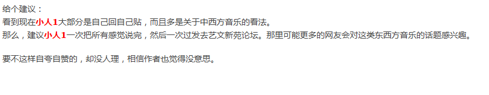

3.官民之别。

首先小人没有自夸自赞，上面已经说过对此没有兴趣；第二，有没有人理小人更不在乎。只不过小人现在探讨的东西熟悉的人少，想多人聊不如说王菲。第三，小人在说古典诗歌的一个突破可能，并不是说音乐，应该没有违规，请看清楚。
问：为什么删帖子，请说出理由。假如说官喜欢那就算了。
问：小人看到还有回贴说方言的，这又为什么？难道还有官民之别？
至于其他论坛，小人只限制用一个贴，不这样自回怎么办？
那次是觉得语言上有英文字母，不断删，这次没有，但假如官说有，就有吧。
答: 是有区别，不过不是官民区别。而是你小人的前科记录在案的区别。
上次国学连封你七个ID，从小人至小人6，为什么封大家看的到，也很清楚。有前科的人，我们自然会小心。：）
而且，长篇关于诗词的理论，发去理论论坛也是论坛本身的规定。我们不觉得这个规定对你有什么限制或不对的：）
答：好在故乡也是个知名的论坛，好在上次的事情过去不久，您自己回了多少帖子，是什么颜色什么内容的帖子，您不记得，记得的人还有很多，今天在这里我们本是好言劝告，您既然如此，我们只能按纪律办事。